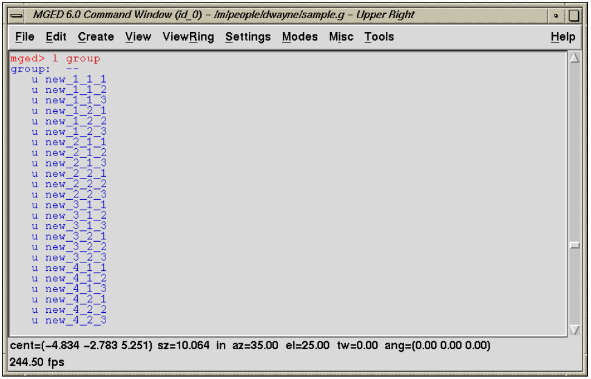
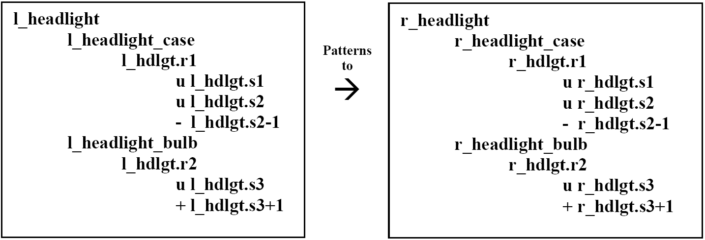
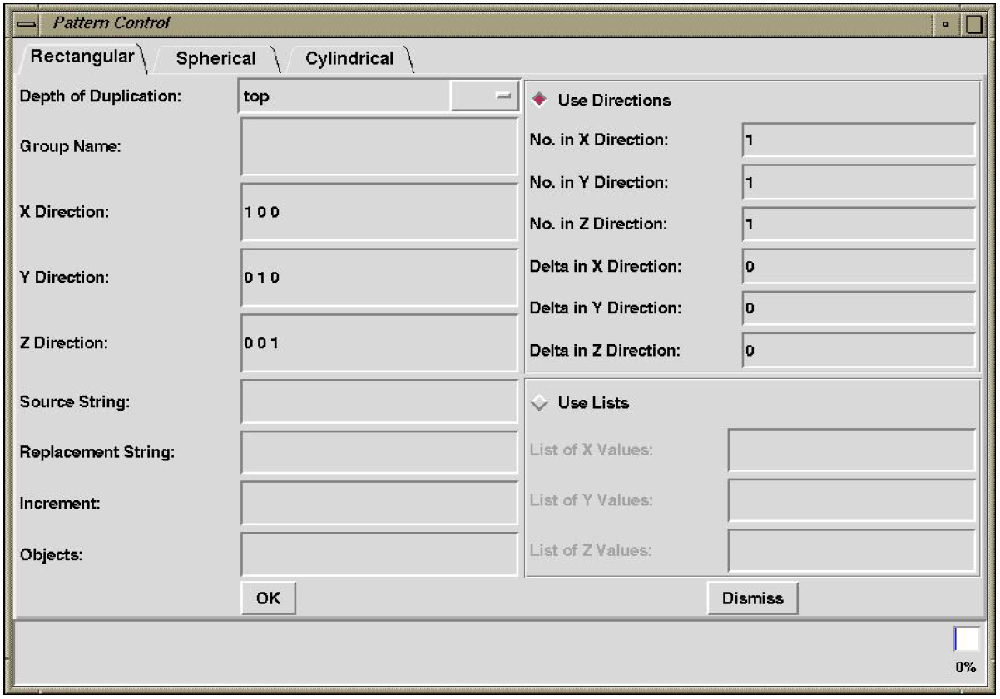
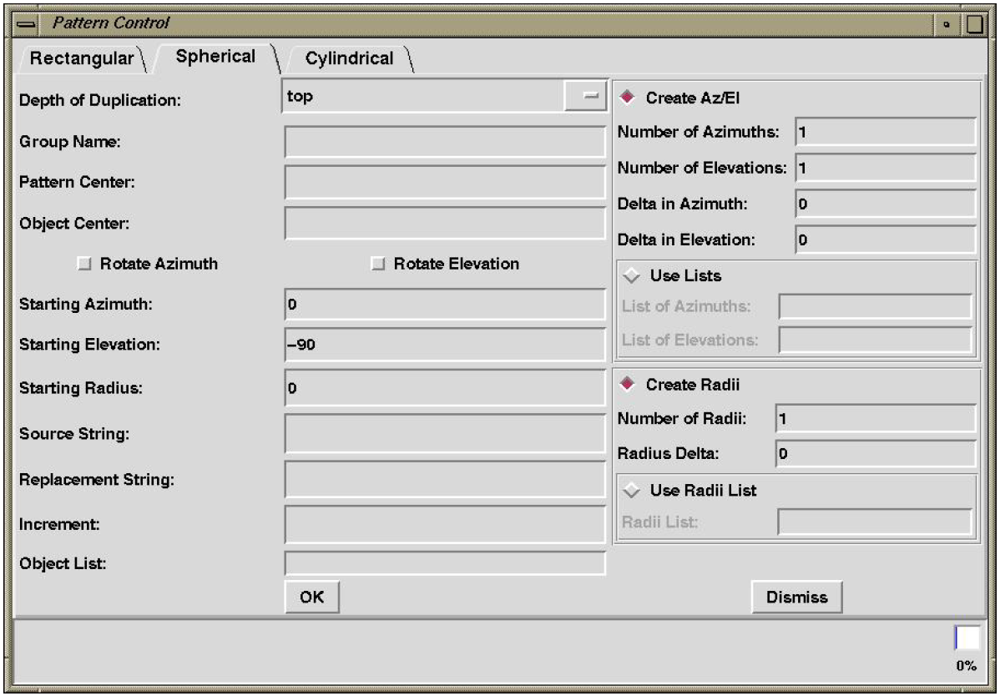
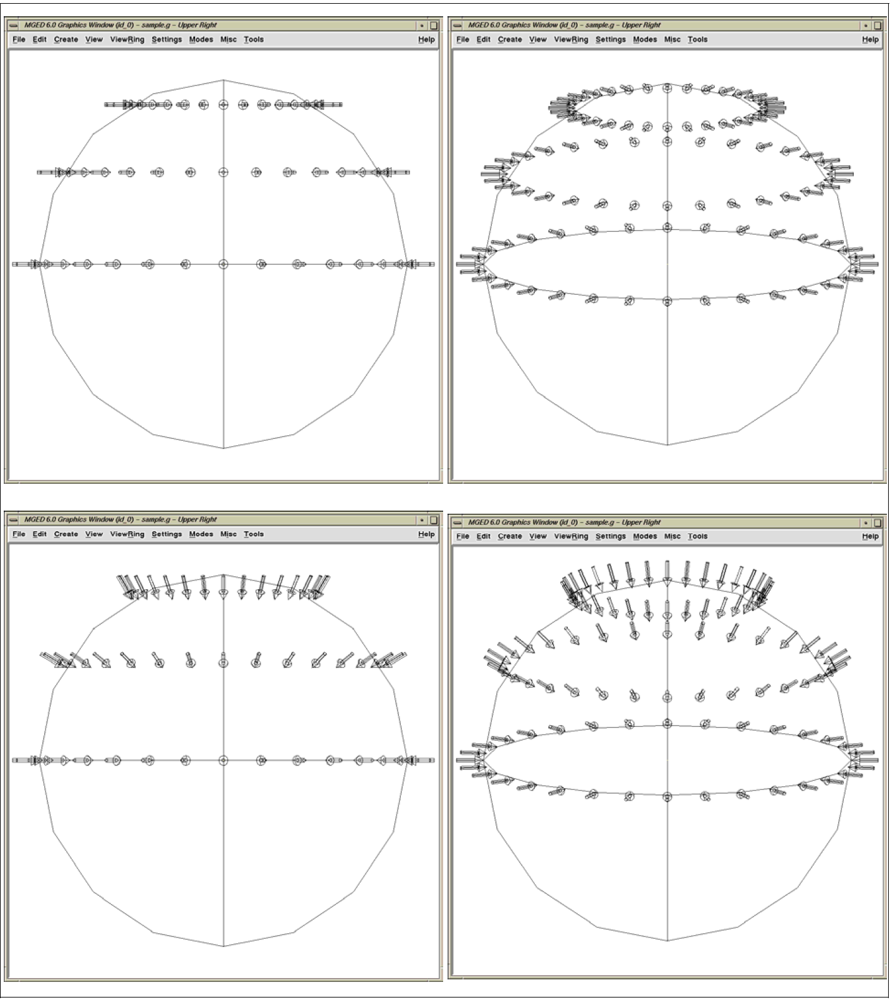
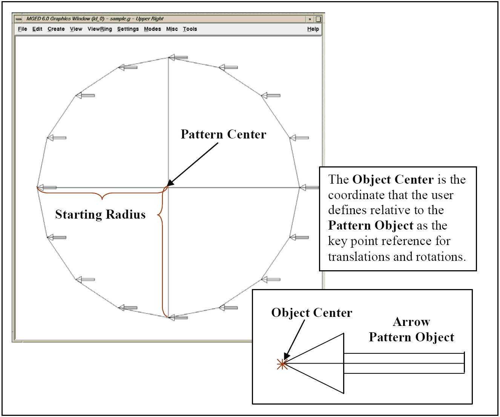
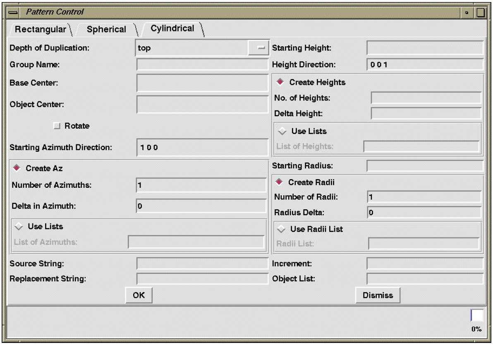

General Pattern Information
As mentioned previously, the Build Pattern tool automates the process of making copies of existing geometry in rectangular, spherical, or cylindrical patterns. The user can choose to pattern at any of three depths of duplication: top, regions, and primitives.
The Build Pattern tool is run from the graphical user interface (GUI) (under the Tools menu); it currently has no command-line equivalent. The bottom of the pattern control GUI is a usage dialog box that lists pertinent information about each item on the GUI as the user mouses over the text.
There are many input fields. Some stand alone, and others belong to series that work together to provide the needed information for a specific option. Each series is denoted by a diamond-shaped check box. If the diamond is highlighted red, then all fields in that series are required. All required fields must be filled in for the pattern tool to work properly. It is also important to note that all dimensions must be in millimeters and that no commas should be used in number strings.
The Build Pattern tool is designed to work from a prototype geometry object. That is to say, the object that is patterned is not included in the resultant pattern.
Pattern Names
As shown in Figure E-1, the tool appends three numbers to all patterned objects (unless you are using the increment option for primitives, in which case, the numbers for regions and primitives are incremented by the increment amount). For rectangular patterns, the first number is the X axis offset, the second is the Y axis offset, and the third is the Z axis offset. For spherical patterns, the first number references the azimuth, the second references the elevation, and the third references the radii. For cylindrical patterns, the first number references the radii, the second number references the height, and the third number references the azimuth.
Common Fields for all Patterns:
There are several fields in the pattern tool GUI that are common to all types of patterns.
The Group Name field is for the name of the combination to be created (or appended to) by a pattern call.
The Source String and Replacement String fields must be used together. The source string is the set of characters in each element of the patterned object to be changed. The replacement string is the set of characters that will replace the source string.

The Increment field is only for use when duplicating to the primitive level. It is added to the leftmost number field of each primitive. To determine the increment, examine the primitives of the object(s) you wish to pattern and find the largest span. For example, to create a pattern to the primitive level with the following primitives (which may or may not be in regions or assemblies):
part.s22 part.s22-1 part.s23 part.s24 part.s24+1 part.s24-1 part.s25,
one needs to determine the span. Note that the leftmost numbers in these primitives range from 22–25.Thus, as shown in the following expression, the span is four (inclusively). NEED FIGURE HERE** If we use an increment of four, we will get the following set of primitives.
part.s26 part.s26-1 part.s27 part.s28 part.s28+1 part.s28-1 part.s29
Although it is acceptable to use a greater increment, gaps in numbers may be troublesome if one is using this capability extensively.
Finally, the Objects field is used for the names of all the items to be patterned.
String Substitution
It is also possible to create a pattern in which a string of characters in each element in the object is changed (e.g., "l_" -> "r_"). This is useful for symmetry applications (e.g., left - right) or series (e.g., 1 - n). Each element of the object must have the source string so the user must be thorough and name each primitive, region, and assembly properly. Consider the following example: 
Top-level duplications copy the patterned object and reference its entire structure with matrices, as follows:
/pattern group
/COPIED assemblies [MATRICES]
/assemblies
/regions
/primitives
Region-level duplications copy all assembly and regions and reference from the region level down with matrices.
/pattern group
/COPIED assemblies
/COPIED regions [MATRICES]
/primitives
Primitive-level duplications copy the entire tree structure to the primitive level without matrices using an increment on all primitives.
/pattern group
/COPIED assemblies NO MATRICES
/COPIED regions
/COPIED primitives
Rectangular Patterns
The rectangular pattern GUI (shown in Figure E-2) is designed to facilitate one-, two-, or three-dimensional rectangular patterns. The default X, Y, and Z directions are positive along each axis. In order to create a rectangle that is not axis aligned, these vectors may be changed with the condition that each must remain precisely perpendicular to the other two. If the Use Directions series is checked, the user specifies the number of copies and the Delta between copies for each axis. If the Use Lists series is checked, the user can specify a list of deltas along each axis.

Spherical Patterns
The spherical pattern GUI (shown in Figure E-3) facilitates sphere-shaped patterns rotated around a center vertex using user-specified radii with azimuth and elevation angles. As shown in Figure E-4, the patterned objects—in this case, a series of arrows—may be oriented as built around the sphere or rotated by azimuth and/or elevation such that they are oriented toward the pattern center using the Rotate Azimuth and Rotate Elevation check boxes.
As shown in Figure E-4, the Pattern Center field is the coordinate at the center of the pattern. The Object Center field is a user-defined coordinate used to locate the object(s) relative to the pattern center. It acts as the key point for any transformations to the pattern object(s).
The Starting Azimuth and Starting Elevation fields follow the same right-hand-rule Cartesian coordinate conventions as Multi-Device Geometry Editor (MGED) viewing. The Starting Radius is the distance from the Pattern Center to the object center at the user-specified azimuths and elevations.
If the Create Az/El series is checked, the user defines the number of azimuths and elevations and the deltas between each. If the Use Lists series is checked, the user must specify a list of azimuths and/or elevations.
The Create Radii and Use Radii List series define offsets from the Starting Radius, allowing the user to create a pattern of concentric spheres. If Create Radii is checked, the user specifies the Number of Radii and the Radius Delta in order to construct a number of equally offset sphere patterns. If the Use Radii List is checked, the user specifies a list of radius offsets.

Without the Rotate Azimuth or Rotate Elevation boxes checked, the patterned objects are oriented as built without any rotations. Notice, for example, that every arrow in Figure E-5 points to the left. Notice also that for each patterned arrow, the Object Center (here specified as the tip of the arrow) is located on the circle outline at a distance of one Starting Radius from the Pattern Center. If we set the Object Center to the coordinate at the base of the arrow, the base would then lie on the circular outline. Wherever the Object Center is set is the point at which MGED works with the Object Center coordinate to place and rotate patterned objects.


Cylindrical Patterns
The cylindrical pattern GUI (shown in Figure E-6) facilitates the creation of cylinder-shaped patterns with user-defined center, direction, height, azimuth, and radii inputs. The Base Center is the vertex of the cylinder shape. The Object Center is a user-defined coordinate used to locate the object(s) relative to the Base Center and Height Direction. It acts as the key point for any transformations to the pattern object(s). The Height Direction is the vector along which the cylinder runs. The Starting Height is the offset from the Base Center along the Height Direction that the pattern will place the Object Center.
